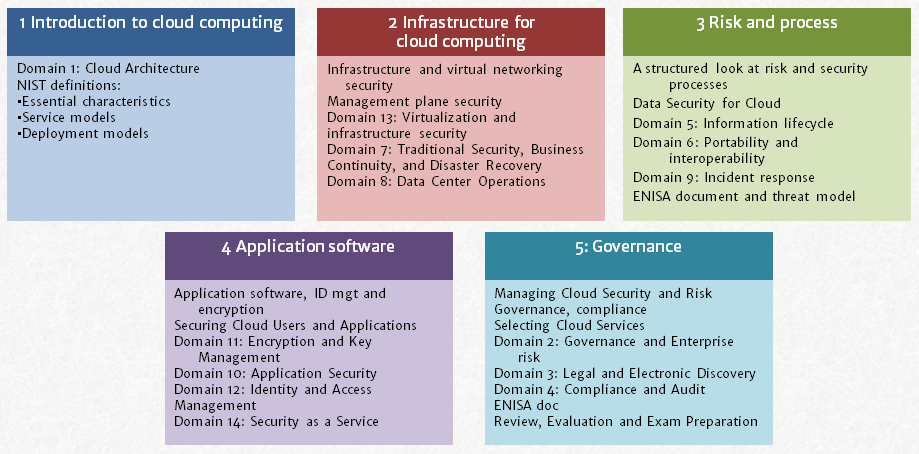

For IT architects, security managers and auditors who want to lead their teams to swift and secure cloud adoption
Faster and more secure cloud adoption by leveraging the Certificate of Cloud Security Knowledge
Get the Cloud Security Certification you Need in Record Time from the Comfort of Your Own Home
You are probably familiar with this. On a weekly or even daily basis, ideas and questions on cloud computing pass your desk. Proposals to go for a certain cloud solution, or strong resistance against one. Maybe the cloud solutions are already in place.
Cloud seems to be everywhere, and you are not new to it.
- Most companies now use cloud solutions, sometimes hundreds of them.
- Cloud computing is a fast growing slice of total IT spend: 20 percent growth per year means 32 percent of corporate IT spend will be on cloud in 2018 (Forbes, IDC).
But there seems to be a Babylonic misunderstanding about it.
- Business units only seem to see cloud as a way to bypass IT and normal security controls.
- Vendors are cloudwashing their legacy products.
- Clients think cloud is primarily a way to save costs.
- A straight path to value is hardly clear.
This is made worse by ever increasing security threats to IT and more government regulation.
The result of this is:
- Lots and lots of talk, fruitless discussion, and even outright negligence of sound business and governance principles.
- Myopic oldskool perspectives on how to solve security issues.
- Overly restrictive and therefore unproductive cloud security policies.
This leads to a lack of proper cloud adoption. Good opportunities are missed, while at the same time severe risks are taken.
- Happy go lucky business units unknowingly run great risks with their shadow cloud deployments.
- Valuable enterprise benefits by using cloud are missed or come to a grinding halt as a result of misguided policies or lack of understanding of cloud benefits and risks.
Do you, as a professional, want to be a part of this?
Or is there a way to have a better and more productive understanding of cloud computing and its security?
The Cloud Security Alliance body of knowledge
The Cloud Security Alliance (CSA), a vendor neutral industry association, established the Certificate of Cloud Security Knowledge (CCSK), which demonstrates knowledge of the leading cloud security guidance documents.
While many people take the CCSK for its certification value, most actually report that it helps them be more productive in adopting the right level and model of cloud computing.
By understanding the essential cloud and cloud security concepts and applying these in conversations on IT initiatives, consensus is reached quicker. Less time is wasted on discussion and doomed cloud initiatives. Proper cloud adoption and governance is accelerated.
Most importantly, the body of knowledge facilitates a common language around cloud and cloud security.
CCSK Virtual training
My virtual CCSK class helps you to master the body of knowledge in record time from the comfort of your home (or office).
Here’s how it works: the content of the 15 domains is split into five webinar sessions of approximately 120 minutes each with an additional e-learning support site. We’ll cover the same material in the same sequence as in the regular training but at less than half the cost.
The five sessions are a logical grouping of all the domains in the CCSK Body of Knowledge, as is laid out in the following table.  Each session has presentations, quizzes to test your knowledge, Q&As and suggestions for study, practical exercises and application to your current job. The sessions are covered over a period of one week. You will find the schedule below. On top of the live sessions, there will be a membership site featuring a private support group (sneak preview here, and a brief overview video here) with your instructor (me: Peter van Eijk), additional practical resources, as well as optional practical work. If you are able to attend all sessions, and do a little preparation in between, you should be able to pass the on-line CCSK exam immediately after the last session. The price of the exam is included in the course, and you can schedule that session at your own convenience.
{kind=link}
I have delivered CCSK training more than 50 times now, across the world as well as many times online.
What do others say?
Worried about how a virtual class will work for you? Here are a few quotes from participants in earlier virtual sessions:
“The training was a rewarding educational experience and covered a range of Cloud security issues and their increasing complexity. This course would be helpful to Engineers, Compliance Managers and IT Service Managers, anyone in IT. Peter created an engaging and involving syllabus. The number of subjects involved is vast but Peter did a great job of breaking them down into manageable chunks of data, with helpful slides and intriguing tales from real-world IT Trenches.” IT Compliance Manager San Francisco, CA
And
“Virtual learning online can have its own challenges. Peter was very patient and dealt with this very well by being inclusive with individually addressed audio comments to each student. He also encouraged real time feedback and comments via chat which I believe is vital in maintaining bidirectional interaction. The course content was excellent, available online and assisted by ongoing support by the trainer. This course is particularly relevant for Cloud Architects, for Information Security SMEs, for Implementors and Auditors of Managing Risk in Cloud operations and for those involved with Business Continuity or Contractual Negotiations concerning Cloud availability.“ John Thomas MSc, Certified ISO/IEC 27001 Auditor and IT/Security Consultant, Scotland.
More on what participants learned from this training.
Here is the opportunity to become cloud savvy
Virtual CCSK learning starts Monday Nov 21, 2016.
| Session | Date and time (every session is 2 hours) |
| Session 1: Introduction to cloud computing Essential characteristics, service models, deployment models |
Monday UTC/GMT 15:00 |
| Session 2: Infrastructure Security for Cloud Computing Securing base infrastructure, management plane, virtual hosts and networks, IaaS, PaaS, SaaS security |
Tuesday same time |
| Session 3: Risk, Data and Process Threat models, Cloud Data Architectures, Data Security Lifecycle, Information Governance, Data Loss prevention, Portability and interoperability, Incident response and more |
Wednesday same time |
| Session 4: Securing Cloud Applications and Users Encryption and Key Management, Application Security, Identity and Access management, Security as a Service |
Thursday same time |
| Session 5: Governance, Exam preparation Risk and Governance, Legal and Compliance, Audit, What to look for in a cloud provider Exam preparation |
Friday same time |
To secure your place on this course, or ask a question, mail me a message, click this link to add to the shopping cart. After your registration you will receive an invoice (see the shopping cart for payment methods: credit card and paypal are accepted, others can be arranged).
Secure my place in the CCSK training
The fee for the training is EUR 1195 for a limited time EUR 850, which should be less than $ 995 (excluding applicable VAT and payment fees), and includes five sessions, support from your instructor, one CSA exam token which entitles you to two attempts at the exam, and access to the private member’s site for course attendants.
Guarantee
If this training does not offer you the right learning experience, you can quit after the first session and get a full refund. There will also be an option to book additional one-on-one time with the instructor, alone or with colleagues from your company.
Secure my place in the CCSK training
Security operations manager: “The course provides a fantastic overview of Cloud and was an eye opener to me. The benefits of cloud were made clear, but so too were the limitations and considerations of the service. I would recommend this course to everyone involved in Cloud from hands on IT to Executive. This was one of the most informative courses I have attended.”
Daniele Catteddu, Managing Director EMEA, Cloud Security Alliance: “Peter is a very experienced cloud trainer and we have enthusiastic feedback from his CCSK students.”
Leading industry vendor employee: “Exposure to the vast wealth of knowledge and experience Peter HJ van Eijk contains is well worth the price of admission. His CCSK course should be considered a solid foundation for anyone working near the cloud.“
Frequently asked questions
Will this get me CPE points?
This course may qualify for 12 or more CPE points, which might come in handy if you maintain CISSP certification for example, (ISC)² would count them as Group A points. Contact me for details.
What if I am not sure this is a good fit for me?
If you are not sure that this CCSK training is perfect for you, I invite you to schedule a free, no strings attached, 30 minute call with me. Click this link for an appointment scheduler.
What if I cannot attend a session?
You will find a lot of learning material on the private support site. That is also where recordings of the content are available for a few months after the training. If a recording fails, there are multiple recordings of earlier runs of this training.
Secure my place in the CCSK training
Knowledge of cloud computing value and risk is indispensable for any senior IT related role these days. It will advance your career, improve the efficiency of your team, and is likely to positively influence the quality and cost of your company’s services. This training is a very effective way to get these results.
Not ready yet for this training? Click here to sign up for my free cloud security 101 page and stay up to date on cloud security.